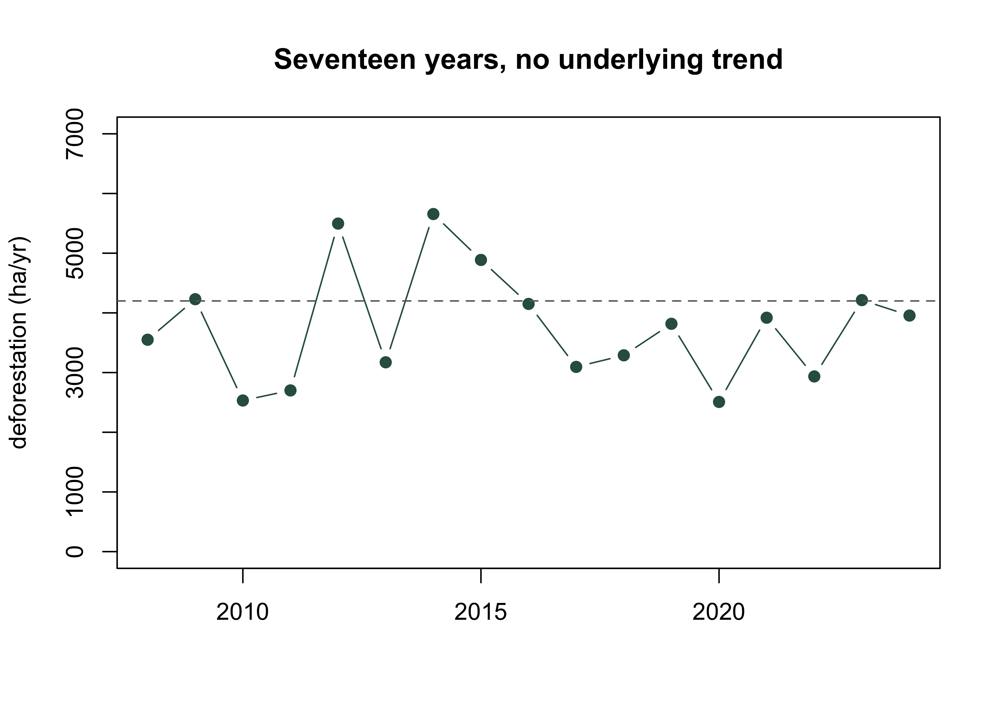
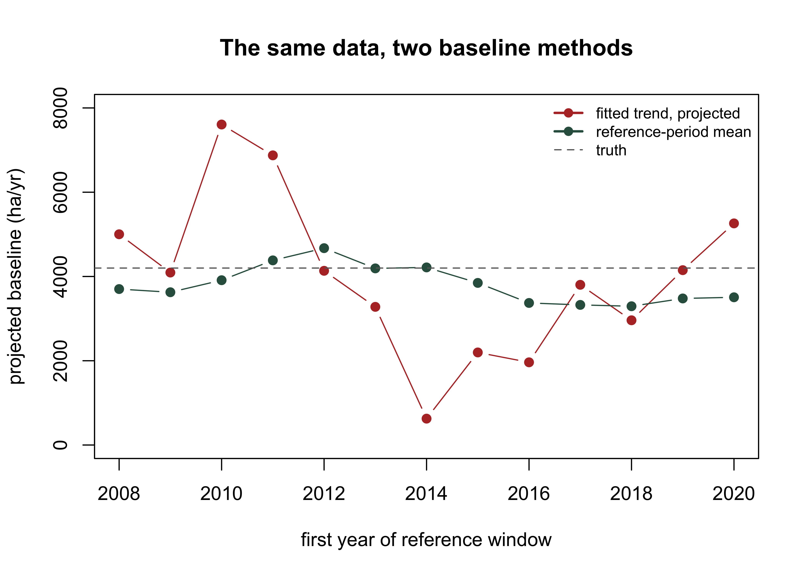

Every chapter so far has measured something. This one does not, and that is the difficulty. A carbon credit is issued for the difference between what happened and what would have happened otherwise, and the second term is a counterfactual: a quantity that by construction cannot be observed, and against which the project’s performance is scored.
The baseline is that counterfactual, expressed as a rate. It is the single most consequential number in a carbon project, because it multiplies through everything: a baseline set ten per cent too high issues ten per cent more credits for the same forest, indefinitely. It is also the number most exposed to the proponent’s discretion, since the proponent usually proposes it.
That combination, high leverage and unfalsifiability, explains almost every feature of how the standards handle baselines. Read the rules as a forecasting method and they look crude. Read them as anti-gaming devices and they are carefully built.
10.2 A baseline is not a forecast
The temptation is to treat baseline construction as a prediction problem: model historical deforestation, extrapolate, and call the projection the baseline. Every major standard declines to do this, and the reason is worth demonstrating rather than asserting.
Take a jurisdiction whose deforestation rate is genuinely flat at 4,200 hectares a year, observed for seventeen years with the year-to-year variability any real record has.
set.seed(11)years<-2008:2024true_rate<-4200# ha/yr, genuinely constantobs<-round(rnorm(length(years), true_rate, 1100))names(obs)<-yearsplot(years, obs, type ="b", pch =19, col ="#2f5d4e", ylim =c(0, 7000), xlab ="", ylab ="deforestation (ha/yr)", main ="Seventeen years, no underlying trend")abline(h =true_rate, lty =2, col ="grey40")

There is no trend here. Now build a baseline two ways from every possible five-year reference window: as the mean of the window, and as a fitted linear trend projected forward over a six-year validity period.
The mean baseline moves by about 1,400 hectares a year across every choice of window. The trend baseline moves by nearly 7,000, from a low of about 600 to a high of over 7,600. That is a twelvefold spread in the crediting level, produced from a single dataset with no underlying trend at all, by nothing more than the choice of which five years to call the reference period.
plot(res$start, res$trend_baseline, type ="b", pch =19, col ="#b5342e", ylim =c(0, 8000), xlab ="first year of reference window", ylab ="projected baseline (ha/yr)", main ="The same data, two baseline methods")lines(res$start, res$mean_baseline, type ="b", pch =19, col ="#2f5d4e")abline(h =true_rate, lty =2, col ="grey40")legend("topright", c("fitted trend, projected", "reference-period mean", "truth"), col =c("#b5342e", "#2f5d4e", "grey40"), lwd =c(2, 2, 1), lty =c(1, 1, 2), pch =c(19, 19, NA), bty ="n", cex =0.8)

A proponent free to fit a trend and choose the window has been handed a dial. Nothing in the fitted model is dishonest; each regression is a correct summary of its five years. The problem is that a short noisy series does not contain enough information to identify a trend, so the fit reports sampling noise as signal, and the proponent picks the noise they prefer.
Mandating an average removes the dial. It is a worse forecast and a far better rule, and the distinction between those two things is the whole of baseline design.
10.3 What the standards actually specify
Two of the major programmes, arrived at independently, converge on almost the same structure.
Under ART-TREES, the crediting level is the mean of a five-year historical reference period, updated every five years, with the reference period barred from overlapping the crediting period (Architecture for REDD+ Transactions, 2021, Eq. 1). Under Verra’s jurisdictional module for unplanned deforestation, historical activity data over a historical reference period is discounted for uncertainty, annualised, and projected flat across a six-year validity period, after which it must be rebuilt (Verra, 2024).
Neither fits a curve. Both fix the window length in advance so it cannot be chosen after the fact. Both require the reference period to end before crediting begins.
10.4 The ratchet
ART adds a device that is easy to miss and does a great deal of work. An updated crediting level may not be higher than the one it replaces. If the recomputed five-year mean comes out above the previous level, the previous level stands.
crediting_levels<-numeric(0)for(pin1:3){k<-(p-1)*5+1:5raw<-mean(obs[k])crediting_levels[p]<-if(p==1)rawelsemin(raw, crediting_levels[p-1])cat(sprintf("period %d (%d-%d): five-year mean %5.0f -> crediting level %5.0f%s\n",p, years[min(k)], years[max(k)], raw, crediting_levels[p],if(p>1&&raw>crediting_levels[p-1])" capped"else""))}#> period 1 (2008-2012): five-year mean 3702 -> crediting level 3702#> period 2 (2013-2017): five-year mean 4192 -> crediting level 3702 capped#> period 3 (2018-2022): five-year mean 3294 -> crediting level 3294
In the second period the recomputed mean rises to 4,192 and the ratchet holds the crediting level at 3,702. In the third it falls and the lower value is adopted. The baseline can therefore only ever decline, regardless of what the forest does.
This is not a statistical adjustment and does not pretend to be. It is a one-way valve, and its purpose is to prevent a jurisdiction from being rewarded for a bad five years. Without it, a period of high deforestation raises the counterfactual and every subsequent year of ordinary performance looks like an achievement.
10.5 Discounting for uncertainty
Verra’s module requires the historical estimate to be conservatively discounted for its own statistical uncertainty before it becomes a baseline. This is a different use of uncertainty from the crediting deduction of the uncertainty chapter, and it points the same way: the less precisely the historical rate is known, the lower the baseline a project may claim against.
The incentive this creates runs the opposite way from the crediting deduction, and the two together are what make the system coherent. Sloppy historical work lowers the baseline, so it costs credits. Sloppy monitoring work raises the deduction, so it costs credits. There is no measurement corner a proponent can cut that pays.
Note also which quantity is discounted. The uncertainty here is on the activity data, the hectares, which is the term the classification chapter was about. A jurisdiction whose historical map fails the accuracy thresholds does not merely have a caveat attached to its baseline; it has a materially lower one.
10.6 From jurisdiction to project
A jurisdictional baseline is a rate for a whole territory, and a project occupies a fraction of it. Allocating the jurisdictional rate to project areas cannot be done by area alone, because deforestation is not spatially uniform: a project on a road frontage faces very different pressure from one in the interior.
The standard device is a risk surface. Each pixel receives a share of the zonal rate proportional to its modelled risk, so the allocation sums back to the jurisdictional total by construction:
library(terra)library(sf)stems<-st_as_sf(read.csv("data/scbi_stems.csv"), coords =c("lon", "lat"), crs =4326)|>st_transform(32617)r<-rast(ext(vect(stems)), resolution =10, crs ="EPSG:32617")xy<-xyFromCell(r, 1:ncell(r))# a risk surface: pressure decays with distance from the western edged_edge<-xy[, 1]-min(xy[, 1])risk<-exp(-d_edge/150)risk_r<-rast(r); values(risk_r)<-riskzone_rate<-40# ha/yr across the whole areaalloc<-risk/sum(risk)*zone_ratealloc_r<-rast(r); values(alloc_r)<-allocplot(c(risk_r, alloc_r), main =c("Modelled risk", "Allocated loss (ha/yr)"))
The allocation conserves the total, which is the property that makes it auditable: a verifier can sum the project allocations and check they do not exceed the jurisdictional rate. Without that constraint, projects in aggregate can be credited against more deforestation than the jurisdiction has.
project<-xy[, 1]<quantile(xy[, 1], 0.25)# a project on the high-risk edgeround(c(project_share_of_area =100*mean(project), project_share_of_baseline =100*sum(alloc[project])/sum(alloc)), 1)#> project_share_of_area project_share_of_baseline #> 23.8 51.6
The project occupies under a quarter of the area and carries just over half the baseline, because it sits where the pressure is. That asymmetry is the entire reason risk allocation exists, and it is also where the arguments happen: the risk model’s covariates and decay parameters are chosen by someone, and they determine how many credits the project may claim. A verifier who accepts a jurisdictional rate without interrogating the allocation has checked the easy half.
Reference periods and revalidation
The mechanics differ between programmes and the differences matter for anyone reproducing a baseline.
ART-TREES. The crediting level is the mean of a five-year reference period, recomputed every five calendar years starting with the first year of crediting. The reference period may not overlap the crediting period and there may be no gap between them. An updated crediting level may not exceed the previous one; the sole exception is where a new pool or activity is added, which requires the whole five-year reference to be recalculated with it included. Interpolation is allowed where data do not fall on the calendar years, provided no bias is introduced in selecting the data used.
Verra, jurisdictional unplanned deforestation. Historical activity data are estimated over a historical reference period, conservatively discounted for statistical uncertainty, annualised, and used to project forward. The validity period is six years and the baseline must be updated at the end of each one. Four activity data categories must be estimated in every application: historical deforestation, stable forest, stable non-forest and forest regrowth.
One provision is worth emphasising because it contradicts a widespread assumption. Wall-to-wall mapping is not required to estimate the activity data. The estimate comes from a probability sample; maps may be used to stratify that sample and reduce the effort needed to hit precision targets, but the map is not the estimator. This is the same architecture the classification chapter described and the uncertainty chapter’s area adjustment implements.
Source note: the jurisdictional module consulted here is issued as a draft for public consultation, so check its status before relying on the detail. The ART provisions are from the published Standard.
What a verifier asks about a baseline
Four questions, in the order they usually expose problems.
Was the reference period fixed before the data were seen? A window chosen after inspecting the series is a chosen result. Check the dates against the programme’s rules and against the project’s own earlier documents.
Is the method the mandated one? If a proponent has fitted a trend, modelled drivers, or applied a development adjustment, that is a departure requiring explicit permission, not an improvement.
What uncertainty was carried, and which way did it push? The historical estimate should be discounted, not merely reported with a caveat. Ask to see the sample design behind it.
Does the allocation conserve the jurisdictional total? Sum the allocations across all projects and leakage belts in the jurisdiction. If they exceed the jurisdictional rate, credits are being issued twice against the same deforestation.
The recurring theme is that baseline review is mostly documentary rather than computational. The arithmetic is deliberately simple; what is under examination is whether the choices around it were constrained in advance.
10.7 Exercises
Rerun the window comparison with the observation noise halved (sd = 550). By how much does the range of trend baselines shrink, and does it become acceptable? State the sample size or precision at which you would be willing to fit a trend.
Introduce a genuine downward trend of 100 ha/yr into the simulated series and repeat the comparison. Does the mean baseline now systematically over-credit the project, and by how much over a six-year validity period?
Apply the ART ratchet to a series with a genuine downward trend. Does the ratchet ever bind, and what does that tell you about which kind of jurisdiction it is designed to constrain?
Change the risk decay length from 150 m to 400 m and recompute the project’s share of the baseline. How sensitive is the project’s crediting entitlement to a parameter that no field measurement determines?
A jurisdiction reports historical activity data with 30 per cent uncertainty. Compute the discounted baseline, then compute what the project would have claimed at 10 per cent uncertainty. Express the difference as credits over a six-year validity period at 4,200 ha/yr and a nominal 150 tCO2e per hectare.
(Applied.) You are reviewing a project whose allocated baseline is 62 per cent of the jurisdictional rate on 25 per cent of the area. Write the paragraph you would send the proponent, naming the specific evidence you require to accept the allocation.
Architecture for REDD+ Transactions. (2021). The REDD+ environmental excellence standard (TREES), version 2.0. ART Secretariat, Winrock International.
Verra. (2024). Module J-ADB-UD: Jurisdictional activity data baseline for unplanned deforestation, version 1.0. Verra.
Source Code
---title: "Baseline Modelling"format: docx: reference-doc: ./references/style.docx highlight-style: githubexecute: eval: true echo: true warning: false message: falseknitr: opts_chunk: prefer-html: true dev: "png" dpi: 300bibliography: ./references/references.bibcsl: ./references/apa.csl---## Counting what did not happenEvery chapter so far has measured something. This one does not, and that is the difficulty. A carbon credit is issued for the difference between what happened and what would have happened otherwise, and the second term is a counterfactual: a quantity that by construction cannot be observed, and against which the project's performance is scored.The baseline is that counterfactual, expressed as a rate. It is the single most consequential number in a carbon project, because it multiplies through everything: a baseline set ten per cent too high issues ten per cent more credits for the same forest, indefinitely. It is also the number most exposed to the proponent's discretion, since the proponent usually proposes it.That combination, high leverage and unfalsifiability, explains almost every feature of how the standards handle baselines. Read the rules as a forecasting method and they look crude. Read them as anti-gaming devices and they are carefully built.## A baseline is not a forecastThe temptation is to treat baseline construction as a prediction problem: model historical deforestation, extrapolate, and call the projection the baseline. Every major standard declines to do this, and the reason is worth demonstrating rather than asserting.Take a jurisdiction whose deforestation rate is genuinely flat at 4,200 hectares a year, observed for seventeen years with the year-to-year variability any real record has.```{r}set.seed(11)years <-2008:2024true_rate <-4200# ha/yr, genuinely constantobs <-round(rnorm(length(years), true_rate, 1100))names(obs) <- yearsplot(years, obs, type ="b", pch =19, col ="#2f5d4e", ylim =c(0, 7000),xlab ="", ylab ="deforestation (ha/yr)",main ="Seventeen years, no underlying trend")abline(h = true_rate, lty =2, col ="grey40")```There is no trend here. Now build a baseline two ways from every possible five-year reference window: as the mean of the window, and as a fitted linear trend projected forward over a six-year validity period.```{r}wins <-1:(length(years) -4)res <-as.data.frame(t(sapply(wins, function(i) { k <- i:(i +4); y <- years[k]; v <- obs[k] fit <-lm(v ~ y) proj <-predict(fit, data.frame(y =max(y) +1:6))c(start =min(y), mean_baseline =mean(v), trend_baseline =mean(proj))})))knitr::kable(round(res, 0), row.names =FALSE)``````{r}round(c(mean_sd =sd(res$mean_baseline),trend_sd =sd(res$trend_baseline),mean_range =diff(range(res$mean_baseline)),trend_range =diff(range(res$trend_baseline)),ratio =diff(range(res$trend_baseline)) /diff(range(res$mean_baseline))), 1)```The mean baseline moves by about 1,400 hectares a year across every choice of window. The trend baseline moves by nearly 7,000, from a low of about 600 to a high of over 7,600. That is a twelvefold spread in the crediting level, produced from a single dataset with no underlying trend at all, by nothing more than the choice of which five years to call the reference period.```{r}plot(res$start, res$trend_baseline, type ="b", pch =19, col ="#b5342e",ylim =c(0, 8000), xlab ="first year of reference window",ylab ="projected baseline (ha/yr)",main ="The same data, two baseline methods")lines(res$start, res$mean_baseline, type ="b", pch =19, col ="#2f5d4e")abline(h = true_rate, lty =2, col ="grey40")legend("topright", c("fitted trend, projected", "reference-period mean", "truth"),col =c("#b5342e", "#2f5d4e", "grey40"), lwd =c(2, 2, 1),lty =c(1, 1, 2), pch =c(19, 19, NA), bty ="n", cex =0.8)```A proponent free to fit a trend and choose the window has been handed a dial. Nothing in the fitted model is dishonest; each regression is a correct summary of its five years. The problem is that a short noisy series does not contain enough information to identify a trend, so the fit reports sampling noise as signal, and the proponent picks the noise they prefer.Mandating an average removes the dial. It is a worse forecast and a far better rule, and the distinction between those two things is the whole of baseline design.## What the standards actually specifyTwo of the major programmes, arrived at independently, converge on almost the same structure.Under ART-TREES, the crediting level is the mean of a five-year historical reference period, updated every five years, with the reference period barred from overlapping the crediting period [@art2021trees, Eq. 1]. Under Verra's jurisdictional module for unplanned deforestation, historical activity data over a historical reference period is discounted for uncertainty, annualised, and projected flat across a six-year validity period, after which it must be rebuilt [@verra2024jadb].Neither fits a curve. Both fix the window length in advance so it cannot be chosen after the fact. Both require the reference period to end before crediting begins.## The ratchetART adds a device that is easy to miss and does a great deal of work. An updated crediting level may not be higher than the one it replaces. If the recomputed five-year mean comes out above the previous level, the previous level stands.```{r}crediting_levels <-numeric(0)for (p in1:3) { k <- (p -1) *5+1:5 raw <-mean(obs[k]) crediting_levels[p] <-if (p ==1) raw elsemin(raw, crediting_levels[p -1])cat(sprintf("period %d (%d-%d): five-year mean %5.0f -> crediting level %5.0f%s\n", p, years[min(k)], years[max(k)], raw, crediting_levels[p],if (p >1&& raw > crediting_levels[p -1]) " capped"else""))}```In the second period the recomputed mean rises to 4,192 and the ratchet holds the crediting level at 3,702. In the third it falls and the lower value is adopted. The baseline can therefore only ever decline, regardless of what the forest does.This is not a statistical adjustment and does not pretend to be. It is a one-way valve, and its purpose is to prevent a jurisdiction from being rewarded for a bad five years. Without it, a period of high deforestation raises the counterfactual and every subsequent year of ordinary performance looks like an achievement.## Discounting for uncertaintyVerra's module requires the historical estimate to be conservatively discounted for its own statistical uncertainty before it becomes a baseline. This is a different use of uncertainty from the crediting deduction of the uncertainty chapter, and it points the same way: the less precisely the historical rate is known, the lower the baseline a project may claim against.```{r}ad_estimate <-4200u <-c(0.05, 0.10, 0.20, 0.35)data.frame(uncertainty_pct =100* u,discounted_baseline =round(ad_estimate * (1- u)),pct_of_estimate =round(100* (1- u)))```The incentive this creates runs the opposite way from the crediting deduction, and the two together are what make the system coherent. Sloppy historical work lowers the baseline, so it costs credits. Sloppy monitoring work raises the deduction, so it costs credits. There is no measurement corner a proponent can cut that pays.Note also which quantity is discounted. The uncertainty here is on the *activity data*, the hectares, which is the term the classification chapter was about. A jurisdiction whose historical map fails the accuracy thresholds does not merely have a caveat attached to its baseline; it has a materially lower one.## From jurisdiction to projectA jurisdictional baseline is a rate for a whole territory, and a project occupies a fraction of it. Allocating the jurisdictional rate to project areas cannot be done by area alone, because deforestation is not spatially uniform: a project on a road frontage faces very different pressure from one in the interior.The standard device is a risk surface. Each pixel receives a share of the zonal rate proportional to its modelled risk, so the allocation sums back to the jurisdictional total by construction:$$\text{Allocated}_{pixel} = \frac{\text{risk}_{pixel}}{\sum_{zone} \text{risk}} \times \text{Rate}_{zone}$$```{r}library(terra)library(sf)stems <-st_as_sf(read.csv("data/scbi_stems.csv"),coords =c("lon", "lat"), crs =4326) |>st_transform(32617)r <-rast(ext(vect(stems)), resolution =10, crs ="EPSG:32617")xy <-xyFromCell(r, 1:ncell(r))# a risk surface: pressure decays with distance from the western edged_edge <- xy[, 1] -min(xy[, 1])risk <-exp(-d_edge /150)risk_r <-rast(r); values(risk_r) <- riskzone_rate <-40# ha/yr across the whole areaalloc <- risk /sum(risk) * zone_ratealloc_r <-rast(r); values(alloc_r) <- allocplot(c(risk_r, alloc_r), main =c("Modelled risk", "Allocated loss (ha/yr)"))round(c(zone_rate = zone_rate, allocated_total =sum(alloc)), 3)```The allocation conserves the total, which is the property that makes it auditable: a verifier can sum the project allocations and check they do not exceed the jurisdictional rate. Without that constraint, projects in aggregate can be credited against more deforestation than the jurisdiction has.```{r}project <- xy[, 1] <quantile(xy[, 1], 0.25) # a project on the high-risk edgeround(c(project_share_of_area =100*mean(project),project_share_of_baseline =100*sum(alloc[project]) /sum(alloc)), 1)```The project occupies under a quarter of the area and carries just over half the baseline, because it sits where the pressure is. That asymmetry is the entire reason risk allocation exists, and it is also where the arguments happen: the risk model's covariates and decay parameters are chosen by someone, and they determine how many credits the project may claim. A verifier who accepts a jurisdictional rate without interrogating the allocation has checked the easy half.::: {.verification}#### Reference periods and revalidation {.unnumbered .unlisted}The mechanics differ between programmes and the differences matter for anyonereproducing a baseline.**ART-TREES.** The crediting level is the mean of a five-year reference period,recomputed every five calendar years starting with the first year of crediting.The reference period may not overlap the crediting period and there may be no gapbetween them. An updated crediting level may not exceed the previous one; thesole exception is where a new pool or activity is added, which requires the wholefive-year reference to be recalculated with it included. Interpolation is allowedwhere data do not fall on the calendar years, provided no bias is introduced inselecting the data used.**Verra, jurisdictional unplanned deforestation.** Historical activity data areestimated over a historical reference period, conservatively discounted forstatistical uncertainty, annualised, and used to project forward. The validityperiod is six years and the baseline must be updated at the end of each one.Four activity data categories must be estimated in every application: historicaldeforestation, stable forest, stable non-forest and forest regrowth.One provision is worth emphasising because it contradicts a widespreadassumption. Wall-to-wall mapping is **not required** to estimate the activitydata. The estimate comes from a probability sample; maps may be used to stratifythat sample and reduce the effort needed to hit precision targets, but the map isnot the estimator. This is the same architecture the classification chapterdescribed and the uncertainty chapter's area adjustment implements.Source note: the jurisdictional module consulted here is issued as a draft forpublic consultation, so check its status before relying on the detail. TheART provisions are from the published Standard.:::::: {.verification}#### What a verifier asks about a baseline {.unnumbered .unlisted}Four questions, in the order they usually expose problems.*Was the reference period fixed before the data were seen?* A window chosen afterinspecting the series is a chosen result. Check the dates against the programme'srules and against the project's own earlier documents.*Is the method the mandated one?* If a proponent has fitted a trend, modelleddrivers, or applied a development adjustment, that is a departure requiringexplicit permission, not an improvement.*What uncertainty was carried, and which way did it push?* The historical estimateshould be discounted, not merely reported with a caveat. Ask to see the sampledesign behind it.*Does the allocation conserve the jurisdictional total?* Sum the allocationsacross all projects and leakage belts in the jurisdiction. If they exceed thejurisdictional rate, credits are being issued twice against the samedeforestation.The recurring theme is that baseline review is mostly documentary rather thancomputational. The arithmetic is deliberately simple; what is under examinationis whether the choices around it were constrained in advance.:::## Exercises1. Rerun the window comparison with the observation noise halved (`sd = 550`). By how much does the range of trend baselines shrink, and does it become acceptable? State the sample size or precision at which you would be willing to fit a trend.2. Introduce a genuine downward trend of 100 ha/yr into the simulated series and repeat the comparison. Does the mean baseline now systematically over-credit the project, and by how much over a six-year validity period?3. Apply the ART ratchet to a series with a genuine downward trend. Does the ratchet ever bind, and what does that tell you about which kind of jurisdiction it is designed to constrain?4. Change the risk decay length from 150 m to 400 m and recompute the project's share of the baseline. How sensitive is the project's crediting entitlement to a parameter that no field measurement determines?5. A jurisdiction reports historical activity data with 30 per cent uncertainty. Compute the discounted baseline, then compute what the project would have claimed at 10 per cent uncertainty. Express the difference as credits over a six-year validity period at 4,200 ha/yr and a nominal 150 tCO2e per hectare.6. *(Applied.)* You are reviewing a project whose allocated baseline is 62 per cent of the jurisdictional rate on 25 per cent of the area. Write the paragraph you would send the proponent, naming the specific evidence you require to accept the allocation.